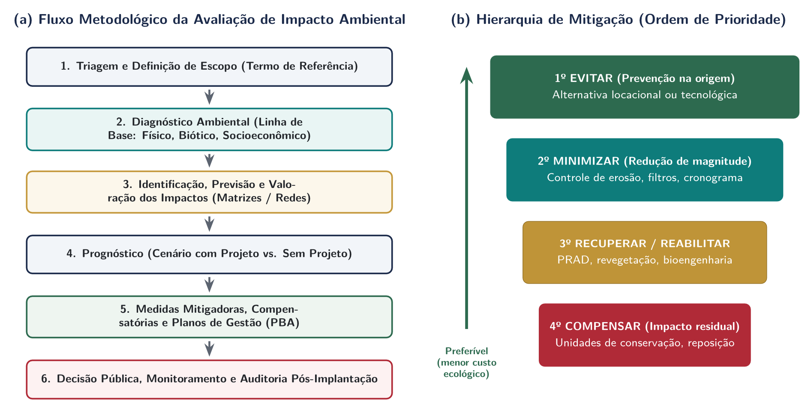
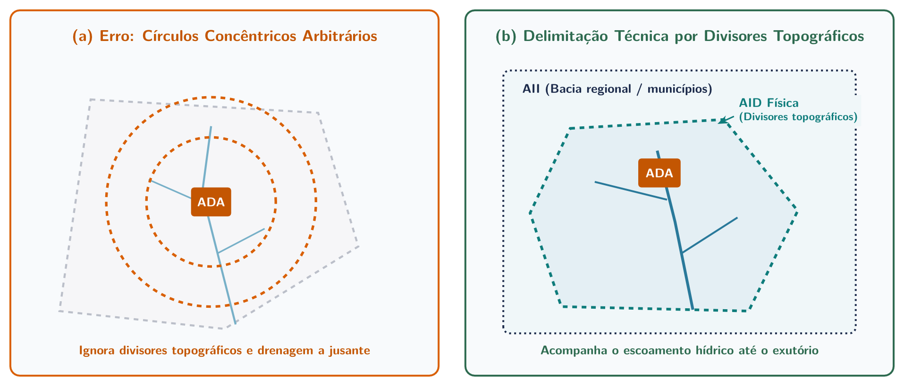
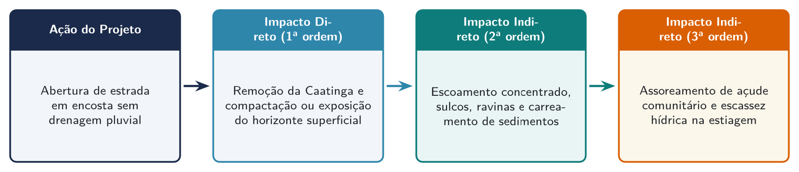
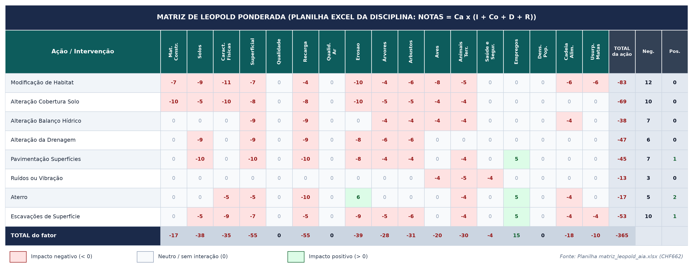

5 Avaliação de Impacto Ambiental (AIA) e Planejamento Ambiental
A avaliação de impacto ambiental examina as consequências de uma intervenção enquanto alternativas ainda podem ser consideradas. O diagnóstico estabelece as condições de referência, o prognóstico explicita as mudanças esperadas e o monitoramento permite verificar a resposta do sistema após a decisão.
O capítulo desenvolve o conceito preventivo da Avaliação de Impacto Ambiental (AIA), a sequência completa de suas etapas, a delimitação espacial de áreas de influência e os principais métodos de identificação e valoração de impactos. Ao longo do texto, figuras esquemáticas, fotografia de campo e exemplos resolvidos acompanham a aplicação da Matriz de Leopold Ponderada, da Hierarquia de Mitigação e da auditoria do Plano Básico Ambiental (PBA).
A leitura retoma a distinção entre atividade geradora, aspecto ambiental e impacto (adverso ou benéfico), além das noções de degradação, vulnerabilidade e fragilidade construídas no Módulo 1. A delimitação espacial do estudo acompanha os processos físicos, bióticos e sociais examinados, incluindo deslocamento de sedimentos, conectividade de habitats e circulação regional.
Conceito, Natureza Preventiva e Papel da AIA no Planejamento
A Avaliação de Impacto Ambiental (AIA) opera como um instrumento de política e planejamento ambiental de caráter preventivo. Como sintetiza Sánchez (2013, cap. 7), avaliar impactos ambientais significa identificar, prever, interpretar e comunicar, antes que uma obra, atividade ou política seja implantada, as alterações que ela poderá provocar nos meios físico, biótico e socioeconômico, propondo medidas capazes de evitar ou reduzir danos e ampliar benefícios.
No Brasil, a AIA integra os instrumentos da Política Nacional do Meio Ambiente (Lei nº 6.938/1981) e articula-se diretamente ao licenciamento ambiental (Brasil/MMA, 2016; Vital et al., 2020). O Estudo de Impacto Ambiental (EIA), documento técnico completo, acompanhado pelo Relatório de Impacto Ambiental (RIMA) em linguagem acessível à sociedade, representa a modalidade exigida para empreendimentos potencialmente causadores de significativa degradação ambiental conforme a Resolução CONAMA nº 001/1986. Além do EIA/RIMA, o processo de AIA abrange estudos simplificados (como o Relatório Ambiental Simplificado, o Plano de Controle Ambiental e o Estudo Ambiental Preliminar), o exame técnico pelo órgão licenciador, as audiências públicas e o acompanhamento posterior à licença.
Na leitura técnica das etapas e matrizes deste capítulo, o Termo de Referência (TR) fixa o escopo exigido pelo órgão ambiental, enquanto a Área Diretamente Afetada (ADA), a Área de Influência Direta (AID) e a Área de Influência Indireta (AII) organizam a extensão espacial do diagnóstico. Na fase executiva, o Plano Básico Ambiental (PBA) detalha os programas de controle e monitoramento. Nas matrizes ponderadas adaptadas de Leopold, cada interação entre o fator \(i\) e a ação \(j\) recebe sinal (\(s_{ij}\)), magnitude (\(M_{ij}\), de \(1\) a \(10\)), importância (\(I_{ij}\), de \(1\) a \(10\)) e pontuação ponderada \(P_{ij} = s_{ij} \cdot M_{ij} \cdot I_{ij}\), ao passo que a parcela inevitável remanescente após todas as intervenções de controle recebe o nome de impacto residual.
A AIA como Instrumento do Planejamento Ambiental
Quando reduzida a um rito cartorial executado depois que todas as decisões de engenharia já estão fechadas, a AIA perde sua função preventiva e converte-se em justificativa documental tardia. Para cumprir seu papel no planejamento ambiental, o estudo precisa atuar desde a concepção do projeto, orientando três decisões estruturantes. No plano espacial, subsidia a comparação de alternativas locacionais, definindo onde instalar a infraestrutura para resguardar nascentes, Áreas de Preservação Permanente (APPs), solos suscetíveis à erosão e territórios de elevado valor sociocultural. De forma complementar, orienta a seleção de alternativas tecnológicas, contrastando métodos construtivos e processos produtivos para escolher aqueles que geram menor volume de rejeitos, menor supressão vegetal e menor demanda hídrica. Simultaneamente, exige a avaliação da alternativa zero, referente à manutenção do território sem a obra, verificando se o interesse público e o balanço socioambiental justificam a intervenção proposta.
A distinção entre o processo amplo de avaliação e suas peças documentais previne equívocos frequentes no licenciamento, conforme destacado a seguir.
Equívoco frequente. Afirmar que “todo licenciamento exige EIA/RIMA” ou empregar AIA e EIA como sinônimos exatos.
Correção técnica. A AIA corresponde ao processo amplo de avaliação prévia de impactos (triagem, escopo, estudos, decisão e acompanhamento), enquanto o EIA/RIMA constitui uma de suas modalidades documentais, exigida quando há potencial de significativa degradação ambiental. Empreendimentos de menor porte ou potencial poluidor passam pela etapa de triagem e apresentam estudos simplificados, como o Relatório Ambiental Simplificado (RAS) ou o Plano de Controle Ambiental (PCA).
Etapas do Processo de Avaliação de Impacto Ambiental
A literatura internacional e os manuais brasileiros de referência (Sánchez, 2013; Brasil/MMA, 2016) organizam a AIA em um encadeamento lógico e iterativo de etapas no qual cada fase condiciona a consistência da etapa seguinte, como se observa no Painel (a) da Figura 5.1.

Triagem e Definição de Escopo (Termo de Referência)
A triagem (screening) abre o processo ao responder se o projeto requer EIA/RIMA completo, estudo ambiental simplificado ou dispensa de AIA. Essa decisão combina a tipologia da atividade (rodovias, parques eólicos, mineração ou barragens), o porte do empreendimento (área ocupada, potência instalada ou vazão captada) e a sensibilidade ambiental do sítio, avaliando a proximidade de Unidades de Conservação, terras indígenas, comunidades tradicionais, nascentes ou remanescentes de Caatinga conservada.
Confirmada a exigência de estudo ambiental, a definição de escopo (scoping) delimita os temas e processos que exigem investigação aprofundada, evitando relatórios extensos repletos de dados secundários desconexos e estudos omissos quanto aos riscos principais. O produto formal dessa etapa é o Termo de Referência (TR), emitido pelo órgão ambiental competente (como o INEMA na Bahia ou o IBAMA na esfera federal) ou estruturado como proposta técnica pelo consultor para validação prévia.
Na prática profissional, uma proposta consistente de Termo de Referência encadeia cinco blocos integrados. O bloco inicial fixa a abrangência do estudo (EIA, RIMA e, quando houver risco químico ou tecnológico, Estudo de Análise de Risco) e exige levantamentos primários em campo articulados a bases oficiais recentes (IBGE, INEMA, ANA e universidades), com protocolos explícitos de amostragem. O bloco seguinte caracteriza o empreendimento por meio de cadastro técnico, histórico da área, mapa de localização em escala de detalhe (como \(1:10.000\)) inserido na bacia hidrográfica, mapa de restrições legais e descrição operacional de insumos, resíduos sólidos (ABNT NBR 10004 a 10007), efluentes, ruído e tráfego.
Em seguida, o TR especifica os parâmetros mínimos do diagnóstico na AID e na AII em escalas cartográficas compatíveis, usualmente \(1:25.000\) para a AID e \(1:50.000\) para a AII. Esse diagnóstico cobre geologia, geomorfologia, hidrografia e qualidade do ar no meio físico; inventários florísticos e faunísticos com curvas de suficiência amostral no meio biótico; e dinâmica demográfica, uso do solo, anuência do IPHAN para patrimônio arqueológico e levantamento específico de povos indígenas e comunidades quilombolas segundo registros da Fundação Cultural Palmares e do INCRA no meio socioeconômico. No bloco final, o documento define o método de valoração de impactos, os programas ambientais do PBA com cronograma e orçamento, as cartas temáticas sobre base planialtimétrica comum, as diretrizes de redação acessível do RIMA, as Anotações de Responsabilidade Técnica (ARTs) da equipe e os procedimentos de consulta pública.
Diagnóstico Ambiental (Linha de Base) e Áreas de Influência
O diagnóstico constrói a linha de base (baseline), retratando de modo qualiquantitativo as condições do ambiente antes da intervenção. No meio físico, levantam-se clima, geologia, geomorfologia, solos, recursos hídricos superficiais e subterrâneos, qualidade do ar e ruído de fundo para aferir a suscetibilidade do substrato à erosão e às alterações hidrológicas. No meio biótico, inventariam-se fitofisionomias, flora (com atenção a espécies endêmicas e ameaçadas), fauna terrestre e aquática e corredores ecológicos. No meio socioeconômico, analisam-se demografia, uso e ocupação da terra, estrutura produtiva, serviços públicos, comunidades quilombolas, indígenas e de fundo de pasto e patrimônio cultural, revelando como os grupos locais dependem dos recursos afetados.
Para espacializar esses levantamentos, o diagnóstico delimita três escalas geográficas fundamentadas em processos físicos, ecológicos e territoriais reais, superando o traçado arbitrário de círculos no mapa. A Área Diretamente Afetada (ADA) corresponde à superfície efetivamente ocupada pelas estruturas físicas do projeto, incluindo canteiros, estradas de acesso, jazidas e áreas de bota-fora, a exemplo da poligonal das bases de torres eólicas e das vias abertas na Caatinga. A Área de Influência Direta (AID) abrange o espaço submetido aos impactos primários de implantação e operação; no meio físico, acompanha os divisores topográficos da microbacia drenada pela ADA e a direção do escoamento superficial até o exutório afetado, enquanto nos meios biótico e socioeconômico acompanha manchas de ruído, dispersão de poeira, áreas de afugentamento de fauna e povoados lindeiros. A Área de Influência Indireta (AII) engloba o espaço atingido por desdobramentos secundários, como municípios receptores de tráfego pesado e arrecadação tributária ou a sub-bacia regional a jusante.
Traçar círculos concêntricos arbitrários ignora a direção natural da drenagem e deixa setores vulneráveis fora do monitoramento, erro contrastado com a delimitação hidrográfica correta na Figura 5.2.

O Exemplo 5.1 quantifica a proporção espacial entre ADA, AID e AII em um empreendimento solar no Semiárido baiano.
Situação analisada. Uma empresa propõe a instalação de uma usina solar fotovoltaica em área rural de transição semiárida na Bahia. O projeto prevê \(45{,}0\text{ ha}\) ocupados pelos arranjos de painéis solares e \(3{,}5\text{ ha}\) destinados à subestação, canteiro de obras e estradas internas de acesso. A microbacia hidrográfica que drena o empreendimento possui \(620{,}0\text{ ha}\), e o município de inserção ocupa \(48.500{,}0\text{ ha}\).
Dados disponíveis. Área dos painéis \(= 45{,}0\text{ ha}\); áreas de apoio e acessos \(= 3{,}5\text{ ha}\); área da microbacia (AID do meio físico) \(= 620{,}0\text{ ha}\); área do município (AII socioeconômica) \(= 48.500{,}0\text{ ha}\).
Problema a resolver. Calcular a Área Diretamente Afetada (ADA) total, determinar o percentual que a ADA representa em relação à AID e à AII, e justificar por que a AID do meio físico deve acompanhar os divisores da microbacia.
Fundamento da análise. Soma das superfícies de intervenção direta para obtenção da ADA e cálculo das razões percentuais (\(\text{ADA}/\text{AID} \times 100\%\) e \(\text{ADA}/\text{AII} \times 100\%\)), segundo os critérios espaciais de Sánchez (2013).
Desenvolvimento. Somando as superfícies de supressão e ocupação direta, obtém-se a ADA total e suas proporções nas áreas de influência:
\[ \begin{aligned} \text{ADA} &= 45{,}0 + 3{,}5 = 48{,}5\text{ ha} \\ \frac{\text{ADA}}{\text{AID}} \times 100\% &= \frac{48{,}5}{620{,}0} \times 100\% \approx 7{,}82\% \\ \frac{\text{ADA}}{\text{AII}} \times 100\% &= \frac{48{,}5}{48.500{,}0} \times 100\% = 0{,}10\%. \end{aligned} \]
Quanto ao critério físico, o escoamento superficial, o carreamento de sedimentos e eventuais vazamentos de transformadores seguem a gravidade e os divisores topográficos. Um círculo fixo de \(1\text{ km}\) incluiria trechos de bacias vizinhas sem conexão hídrica com o parque e deixaria de fora o exutório a jusante que receberá os sedimentos.
Interpretação do resultado. \(\text{ADA} = 48{,}5\text{ ha}\), correspondendo a \(7{,}82\%\) da AID (microbacia) e \(0{,}10\%\) da AII (município). A AID física deve coincidir com a microbacia porque os fluxos hidrossedimentológicos seguem a drenagem natural.
Condições de validade. A hierarquia espacial \(\text{ADA} < \text{AID} < \text{AII}\) (\(48{,}5 < 620{,}0 < 48.500{,}0\text{ ha}\)) é coerente. Embora \(0{,}10\%\) do município pareça pequeno na escala da AII, ocupar \(7{,}82\%\) da microbacia local com superfícies compactadas altera o pico de escoamento superficial se faltarem drenagem e proteção do solo.
Identificação, Previsão e Valoração de Impactos
Nesta etapa, cruzam-se as ações do projeto (planejamento, implantação, operação e desativação) com os fatores ambientais descritos na linha de base. Cada impacto é caracterizado quanto à natureza (adverso ou benéfico), incidência (direto ou indireto), abrangência (local, regional ou estratégica), temporalidade (imediato, médio ou longo prazo), duração (temporário, permanente ou cíclico), reversibilidade (reversível ou irreversível) e cumulatividade ou sinergia com outros empreendimentos da bacia.
Quatro famílias metodológicas sustentam essa identificação e valoração conforme a complexidade do projeto. As listagens de controle (checklists) reúnem fatores ambientais e impactos potenciais por tipologia de obra em formato simples, descritivo ou escalar, oferecendo rapidez e padronização na triagem e no escopo, ainda que sejam estáticas e tenham dificuldade para explicitar encadeamentos indiretos. As matrizes de interação, com destaque para a Matriz de Leopold (Leopold et al., 1971) e suas versões ponderadas, cruzam em tabela bidimensional as ações do empreendimento (colunas) com os fatores ambientais (linhas), avaliando cada interação por sinal, magnitude e importância para hierarquizar prioridades.
Para rastrear cadeias causais complexas, empregam-se as redes de interação (networks), estruturadas como grafos causa-efeito que encadeiam um impacto primário (direto) aos impactos secundários e terciários (indiretos). No Semiárido, a abertura de uma estrada sem sistema de drenagem desencadeia compactação e exposição do solo com concentração do escoamento superficial (1ª ordem), que evolui para sulcos erosivos, ravinas e carreamento de sedimentos ao riacho (2ª ordem) até assorear o açude comunitário e reduzir a oferta hídrica na estiagem (3ª ordem), encadeamento esquematizado na Figura 5.3.

Em campo, a transição da compactação inicial para o escoamento concentrado torna-se visível assim que as primeiras chuvas intensas incidem sobre a faixa exposta da via sem caixas secas ou saídas d’água, abrindo sulcos laterais que conduzem sedimentos para as drenagens próximas (Figura 5.4).

Na quarta família metodológica, a sobreposição de cartas (overlay) e Sistemas de Informação Geográfica (SIG), derivada do método de Ian McHarg (1969), cruza camadas georreferenciadas (declividade, solos, hidrografia, APPs, remanescentes florestais e áreas urbanas) por álgebra de mapas. Essa abordagem explicita a distribuição espacial exata dos conflitos e subsidia a comparação de alternativas locacionais, dependendo da qualidade e da escala da base cartográfica adotada, tema aprofundado no Capítulo 6. A tabela a seguir sintetiza a escolha prática entre os quatro métodos.
| Método | Principal vantagem | Principal limitação | Uso ideal |
|---|---|---|---|
| Checklists | Rapidez e padronização inicial. | Estrutura estática, sem cadeias causais. | Triagem e escopo. |
| Matriz de Leopold | Liga ações a fatores e prioriza ações críticas. | Pouca clareza para efeitos indiretos. | Síntese de EIAs e PCAs. |
| Redes de Interação | Evidencia impactos indiretos e cumulativos. | Visualmente complexa em grandes projetos. | Bacias, erosão e hidrologia. |
| Sobreposição / SIG | Localiza conflitos e compara traçados. | Depende da escala e qualidade dos mapas. | Traçados e zoneamentos. |
Matriz de Leopold Ponderada, Magnitude, Importância e Balanço
Na adaptação ponderada da Matriz de Leopold (Leopold et al., 1971), cada célula \((i, j)\) com interação efetiva entre o fator ambiental \(i\) (linha) e a ação \(j\) (coluna) recebe três parâmetros. O sinal (\(s_{ij} \in \{-1, +1\}\)) assume \(-1\) para impacto adverso e \(+1\) para impacto benéfico, registrando-se \(0\) quando a interação é inexistente. A magnitude (\(M_{ij} \in \{1, \dots, 10\}\)) mede a intensidade e extensão física da alteração sobre o fator, enquanto a importância (\(I_{ij} \in \{1, \dots, 10\}\)) expressa a relevância ecológica, funcional, social ou legal do receptor atingido, atingindo notas máximas em nascentes, espécies ameaçadas ou comunidades tradicionais.
\[ \begin{aligned} P_{ij} &= s_{ij} \cdot \left(M_{ij} \times I_{ij}\right), \qquad P_{ij} \in [-100, +100] \\ T_j &= \sum_{i=1}^{m} P_{ij}, \qquad F_i = \sum_{j=1}^{n} P_{ij} \\ B &= \sum_{i=1}^{m}\sum_{j=1}^{n} P_{ij} = \sum_{j=1}^{n} T_j = \sum_{i=1}^{m} F_i \\ \Sigma^{-} &= \sum_{P_{ij}<0} P_{ij}, \qquad \Sigma^{+} = \sum_{P_{ij}>0} P_{ij} \end{aligned} \]
Nessas equações, \(P_{ij}\) é a pontuação celular, \(T_j\) mede o saldo da ação \(j\) sobre os \(m\) fatores, \(F_i\) acumula a pressão das \(n\) ações sobre o fator \(i\), \(B\) é o balanço líquido global, \(\Sigma^{-}\) reúne a carga adversa total e \(\Sigma^{+}\) soma a carga benéfica total.
Para acompanhar o cálculo em escala reduzida, considere uma mini-matriz com duas ações (\(A_1\), supressão vegetal em encosta; \(A_2\), contratação de mão de obra local) e dois fatores (\(F_1\), solo e suscetibilidade erosiva; \(F_2\), renda familiar). Na célula \((F_1, A_1)\), a supressão gera dano severo (\(s=-1\), \(M=8\), \(I=9\)), resultando em \(P_{11} = -72\), enquanto em \((F_2, A_1)\) o pagamento temporário pela limpeza produz efeito positivo discreto (\(s=+1\), \(M=2\), \(I=3\)), com \(P_{21} = +6\). A ação \(A_2\) não altera fisicamente o solo (\(P_{12} = 0\)), mas eleva a renda local (\(s=+1\), \(M=6\), \(I=7\)), gerando \(P_{22} = +42\). Somando colunas e linhas, tem-se \(T_1 = -66\), \(T_2 = +42\), \(F_1 = -72\), \(F_2 = +48\), carga adversa \(\Sigma^{-} = -72\), carga benéfica \(\Sigma^{+} = +48\) e balanço \(B = -24\). A estrutura operacional dessa matriz em planilha eletrônica está representada na Figura 5.5.

matriz_leopold_aia.xlsx (CHF662).
O Exemplo 5.2 aplica esse equacionamento completo à avaliação de um parque eólico na Caatinga baiana.
Situação analisada. Durante a AIA de um parque eólico no Semiárido baiano, a equipe técnica estruturou uma matriz cruzando três ações (\(A_1\), supressão vegetal e abertura de acessos; \(A_2\), escavação e concretagem das fundações das torres; \(A_3\), operação dos aerogeradores e contratação de serviços locais) com quatro fatores ambientais (\(F_1\), solo e processos erosivos; \(F_2\), fauna e avifauna; \(F_3\), qualidade da água superficial; \(F_4\), emprego e renda local).
Dados disponíveis. Avaliações \((s, M, I)\) atribuídas após vistorias de campo e linha de base: em \(F_1\) (Solo/Erosão), \(A_1 = (-, 8, 9)\), \(A_2 = (-, 6, 8)\) e \(A_3 = 0\); em \(F_2\) (Fauna/Avifauna), \(A_1 = (-, 7, 8)\), \(A_2 = (-, 3, 5)\) e \(A_3 = (-, 5, 9)\); em \(F_3\) (Qualidade da água), \(A_1 = (-, 5, 7)\), \(A_2 = (-, 4, 7)\) e \(A_3 = 0\); em \(F_4\) (Emprego/Renda), \(A_1 = (+, 3, 5)\), \(A_2 = (+, 4, 5)\) e \(A_3 = (+, 7, 8)\).
Problema a resolver. Calcular todas as pontuações celulares \(P_{ij}\), os totais por ação (\(T_j\)), os totais por fator (\(F_i\)), a carga adversa (\(\Sigma^{-}\)), a carga benéfica (\(\Sigma^{+}\)) e o balanço líquido (\(B\)), identificando a ação mais crítica e o fator mais impactado.
Fundamento da análise. Aplicação das equações da Matriz de Leopold Ponderada (\(P_{ij} = s_{ij} \cdot M_{ij} \cdot I_{ij}\)), com verificação cruzada pela identidade \(\sum T_j = \sum F_i = B\).
Desenvolvimento. Calculando cada célula por linha: em \(F_1\), \(P_{11} = -72\), \(P_{12} = -48\) e \(P_{13} = 0\); em \(F_2\), \(P_{21} = -56\), \(P_{22} = -15\) e \(P_{23} = -45\); em \(F_3\), \(P_{31} = -35\), \(P_{32} = -28\) e \(P_{33} = 0\); e em \(F_4\), \(P_{41} = +15\), \(P_{42} = +20\) e \(P_{43} = +56\). Os valores consolidam-se na matriz a seguir.
| Fator Ambiental | \(A_1\) (Acessos) | \(A_2\) (Fundações) | \(A_3\) (Operação) | Total \(F_i\) |
|---|---|---|---|---|
| \(F_1\), Solo / Erosão | \(-72\) | \(-48\) | \(0\) | \(-120\) |
| \(F_2\), Fauna / Avifauna | \(-56\) | \(-15\) | \(-45\) | \(-116\) |
| \(F_3\), Qualidade da água | \(-35\) | \(-28\) | \(0\) | \(-63\) |
| \(F_4\), Emprego / Renda | \(+15\) | \(+20\) | \(+56\) | \(+91\) |
| Total da Ação (\(T_j\)) | \(-148\) | \(-71\) | \(+11\) | \(B = -208\) |
Conferindo as somas marginais e separando as cargas adversa e benéfica:
\[ \begin{aligned} \sum F_i &= (-120) + (-116) + (-63) + 91 = -208, \\ \sum T_j &= (-148) + (-71) + 11 = -208, \\ \Sigma^{-} &= -72 - 48 - 56 - 15 - 45 - 35 - 28 = -299, \\ \Sigma^{+} &= +15 + 20 + 56 = +91. \end{aligned} \]
Interpretação do resultado. A ação mais impactante negativamente é \(A_1\) (supressão e acessos, \(T_1 = -148\)) e o fator mais vulnerável é \(F_1\) (solo/erosão, \(F_1 = -120\)), seguido de \(F_2\) (fauna/avifauna, \(F_2 = -116\)). A carga adversa vale \(\Sigma^{-} = -299\), a benéfica vale \(\Sigma^{+} = +91\) e o balanço líquido fecha em \(B = -208\).
Condições de validade. A igualdade \(\sum F_i = \sum T_j = \Sigma^{-} + \Sigma^{+} = -208\) confirma a exatidão aritmética. Mesmo com \(T_3 = +11\) na operação, a célula \(P_{23} = -45\) (colisão de avifauna, com importância \(I = 9\)) exige monitoramento e desligamento preventivo para espécies como a arara-azul-de-lear na região de Canudos, jamais sendo anulada pelos \(+56\) pontos de renda.
A interpretação isolada do saldo líquido \(B\) costuma induzir erros graves na tomada de decisão, conforme detalhado no alerta a seguir.
Equívoco frequente. Concluir que um empreendimento é ambientalmente viável porque a soma algébrica \(B = \Sigma^{+} + \Sigma^{-}\) ficou positiva ou próxima de zero (por exemplo, \(+80\) em arrecadação contra \(-75\) em destruição de nascente).
Correção técnica. A pontuação da Matriz de Leopold é semiquantitativa e reúne dimensões incomensuráveis. Empregos temporários não evitam o assoreamento de mananciais nem compensam a extinção local de fauna. Por isso, deve-se reportar \(\Sigma^{-}\) e \(\Sigma^{+}\) separadamente, destacando toda célula adversa de alta importância (\(I \ge 8\)) ou irreversível para vinculá-la a medidas concretas de mitigação.
Prognóstico Ambiental e Efeitos Cumulativos
O prognóstico projeta a evolução futura da qualidade ambiental por meio de dois cenários comparativos obrigatórios com o mesmo horizonte temporal. O cenário sem projeto (alternativa zero) retrata a trajetória provável da bacia na ausência da obra, incorporando tendências já em curso como expansão urbana, sobrepastejo, variações climáticas ou regeneração natural. O cenário com projeto projeta a trajetória com o empreendimento em dois estágios: primeiro sem medidas mitigadoras, para dimensionar o risco potencial, e em seguida com os controles propostos, revelando o impacto residual. O impacto real atribuível ao projeto corresponde à diferença dinâmica entre a trajetória futura com o projeto e a trajetória futura sem o projeto.
Essa projeção deve considerar também os impactos cumulativos, que emergem quando pressões de diferentes empreendimentos convergem sobre o mesmo receptor. Estradas de parques eólicos vizinhos podem direcionar enxurradas para o mesmo riacho, enquanto captações distintas afetam a disponibilidade hídrica do mesmo trecho fluvial, exigindo definir explicitamente o receptor, a área de acumulação e o período analisado. O Exemplo 5.3 mostra como comparar alternativas locacionais no prognóstico por meio de critérios ponderados.
Situação analisada. No estudo de duplicação de uma rodovia estadual na Bahia, o EIA comparou duas alternativas locacionais diante do cenário sem projeto: o Traçado A (mais curto, atravessando uma APP de nascente e um fragmento contínuo de Caatinga) e o Traçado B (\(1{,}2\text{ km}\) mais extenso, contornando a APP por áreas já antropizadas de pastagem).
Dados disponíveis. Quatro critérios ponderados (soma dos pesos \(= 1{,}00\)) em escala de severidade adversa de \(0\) (nenhum dano) a \(10\) (dano máximo): \(C_1\), supressão de APP e vegetação nativa (\(w_1 = 0{,}35\); A \(= 9\), B \(= 3\)); \(C_2\), risco erosivo e assoreamento (\(w_2 = 0{,}30\); A \(= 8\), B \(= 4\)); \(C_3\), fragmentação e atropelamento de fauna (\(w_3 = 0{,}20\); A \(= 8\), B \(= 4\)); \(C_4\), custo e extensão adicional (\(w_4 = 0{,}15\); A \(= 4\), B \(= 7\)).
Problema a resolver. Calcular o Índice de Impacto Adverso Ponderado (\(I_{\text{adv}}\)) de cada alternativa, determinar a redução percentual do índice ao optar pelo melhor traçado e identificar o degrau da Hierarquia de Mitigação correspondente.
Fundamento da análise. Cálculo da média ponderada \(I_{\text{adv}} = \sum_{k=1}^{4} w_k \cdot C_k\) e da variação relativa \((I_A - I_B)/I_A \times 100\%\).
Desenvolvimento. Os pesos somam \(0{,}35 + 0{,}30 + 0{,}20 + 0{,}15 = 1{,}00\). Calculando os índices ponderados e a redução relativa de severidade:
\[ \begin{aligned} I_A &= (0{,}35 \times 9) + (0{,}30 \times 8) + (0{,}20 \times 8) + (0{,}15 \times 4) \\ &= 3{,}15 + 2{,}40 + 1{,}60 + 0{,}60 = 7{,}75 \\ I_B &= (0{,}35 \times 3) + (0{,}30 \times 4) + (0{,}20 \times 4) + (0{,}15 \times 7) \\ &= 1{,}05 + 1{,}20 + 0{,}80 + 1{,}05 = 4{,}10 \\ \text{Redução} &= \frac{7{,}75 - 4{,}10}{7{,}75} \times 100\% = \frac{3{,}65}{7{,}75} \times 100\% \approx 47{,}10\%. \end{aligned} \]
Interpretação do resultado. O Traçado B é superior (\(I_B = 4{,}10\) contra \(I_A = 7{,}75\)), reduzindo em \(47{,}10\%\) a severidade adversa global. Essa escolha representa o 1º degrau da Hierarquia de Mitigação (Evitar), por alternativa locacional.
Condições de validade. Como a escala mede severidade adversa, o menor valor indica melhor desempenho. Apesar do maior custo inicial no critério \(C_4\) (\(7\) contra \(4\)), o Traçado B evita intervenções em APP, obras emergenciais contra erosão e passivos de compensação.
Hierarquia de Mitigação, Medidas Mitigadoras e Compensatórias
Diante de impactos adversos previstos, a tomada de decisão obedece a uma ordem estrita de prioridade técnica conhecida como Hierarquia de Mitigação, representada no Painel (b) da Figura 5.1. No 1º degrau, Evitar (prevenção na origem), ajustam-se localização, traçado, cronograma ou tecnologia para impedir que o impacto ocorra, sendo o nível de maior eficácia ecológica. Quando a prevenção integral é inviável, aplica-se o 2º degrau, Minimizar, utilizando controles de engenharia e manejo (como bacias de contenção de sedimentos, supressão seletiva e controle de poeira) para abater magnitude, duração ou extensão do dano.
Nas áreas afetadas temporariamente durante a obra, como canteiros, taludes de corte e áreas de empréstimo, atua-se no 3º degrau, Recuperar ou Reabilitar (in situ), restabelecendo as funções do solo, da drenagem e da cobertura vegetal mediante Plano de Recuperação de Áreas Degradadas (PRAD) e bioengenharia. Somente para o dano inevitável que persiste após esses três degraus, denominado impacto residual, recorre-se ao 4º degrau, Compensar, por meio de apoio a Unidades de Conservação (art. 36 da Lei nº 9.985/2000, SNUC), reposição florestal equivalente ou superior e programas comunitários. De modo paralelo, impactos benéficos recebem medidas potencializadoras, como capacitação profissional prévia para ampliar a contratação de moradores locais.
O Exemplo 5.4 demonstra o abatimento sequencial (em cascata) ao longo dos quatro degraus da Hierarquia de Mitigação.
Situação analisada. O anteprojeto de um loteamento periurbano previa a supressão de \(12{,}0\text{ ha}\) de vegetação nativa e um aporte de \(480{,}0\text{ t/ano}\) de sedimentos para um riacho a jusante. Após revisão técnica, aplicaram-se sequencialmente os quatro degraus da Hierarquia de Mitigação.
Dados disponíveis. No degrau Evitar, a exclusão de quadras em encostas íngremes evita \(45\%\) da supressão e \(45\%\) do aporte de sedimentos. No degrau Minimizar, o corte seletivo poupa \(1{,}6\text{ ha}\) e bacias de contenção retêm \(60\%\) do sedimento restante. No degrau Recuperar, a bioengenharia recupera \(2{,}0\text{ ha}\) temporários e retém \(75\%\) do sedimento remanescente. No degrau Compensar, exige-se reposição na razão \(2:1\) sobre a perda permanente residual.
Problema a resolver. Calcular o saldo remanescente de vegetação afetada e de sedimentos em cada degrau, o abatimento percentual acumulado de sedimentos e a área de compensação ecológica no 4º degrau.
Fundamento da análise. Abatimento em cascata sobre o saldo remanescente de cada etapa, evitando somar percentuais diretamente sobre a carga inicial.
Desenvolvimento. Para a trajetória da supressão vegetal (em \(\text{ha}\)) e do aporte de sedimentos (em \(\text{t/ano}\)), aplicam-se os abatimentos etapa a etapa:
\[ \begin{aligned} \text{Vegetação após Evitar} &= 12{,}0 - (0{,}45 \times 12{,}0) = 12{,}0 - 5{,}4 = 6{,}6\text{ ha} \\ \text{após Minimizar} &= 6{,}6 - 1{,}6 = 5{,}0\text{ ha} \\ \text{após Recuperar (residual)} &= 5{,}0 - 2{,}0 = 3{,}0\text{ ha} \\ \text{Área a Compensar (}2:1\text{)} &= 2 \times 3{,}0 = 6{,}0\text{ ha} \end{aligned} \]
\[ \begin{aligned} \text{Sedimentos após Evitar} &= 480{,}0 - (0{,}45 \times 480{,}0) = 264{,}0\text{ t/ano} \\ \text{após Minimizar} &= 264{,}0 - (0{,}60 \times 264{,}0) = 105{,}6\text{ t/ano} \\ \text{após Recuperar (residual)} &= 105{,}6 - (0{,}75 \times 105{,}6) = 26{,}4\text{ t/ano} \\ \text{Abatimento acumulado} &= \frac{480{,}0 - 26{,}4}{480{,}0} \times 100\% = 94{,}50\%. \end{aligned} \]
Interpretação do resultado. O impacto residual permanente reduz-se a \(3{,}0\text{ ha}\) de vegetação (exigindo \(6{,}0\text{ ha}\) de compensação na razão \(2:1\)) e a \(26{,}4\text{ t/ano}\) de sedimentos (abatimento total de \(94{,}50\%\)).
Condições de validade. Pelo produto em cascata, \(480{,}0 \times 0{,}55 \times 0{,}40 \times 0{,}25 = 26{,}4\text{ t/ano}\). Sem seguir a hierarquia, tentar compensar os \(12{,}0\text{ ha}\) iniciais exigiria \(24{,}0\text{ ha}\) de reposição e manteria o riacho assoreado com \(480\text{ t/ano}\) de sedimentos.
Propor compensação financeira antes de esgotar alternativas locacionais e medidas de engenharia viola diretamente a Hierarquia de Mitigação, como alerta o quadro a seguir.
Equívoco frequente. Propor diretamente compensação financeira ou plantio em outro município para suprimir uma APP ou fragmento florestal sem avaliar alternativas de traçado ou tecnologia que evitassem a perda.
Correção técnica. A compensação ocupa o 4º e último degrau da hierarquia, destinando-se exclusivamente ao impacto residual que permanece após esgotadas as etapas de evitar, minimizar e recuperar no local.
Plano Básico Ambiental (PBA) e Monitoramento Pós-Implantação
Na etapa decisória, o órgão ambiental emite parecer técnico pelo deferimento com condicionantes ou pelo indeferimento das licenças (Licença Prévia, Licença de Instalação e Licença de Operação). Os compromissos assumidos no EIA convertem-se em projetos executivos detalhados no Plano Básico Ambiental (PBA), que estrutura programas de controle de erosão, monitoramento da qualidade da água, resgate de fauna, educação ambiental e PRAD. Cada programa necessita de condição inicial documentada, meta verificável, frequência de amostragem e responsável técnico.
O monitoramento pós-implantação fecha o ciclo da AIA ao confrontar os indicadores medidos em operação com os valores da linha de base e interpretar desvios junto aos registros de chuva e manutenção. Caso um indicador ultrapasse o limite da condicionante ambiental, aciona-se a gestão adaptativa para corrigir imediatamente os dispositivos de controle em campo.
Aplicação Integrada, Auditoria de Monitoramento no PBA
A verificação quantitativa de desempenho durante a obra exige descontar a condição natural registrada na linha de base antes de calcular a eficiência das medidas de controle, evitando subestimar ou superestimar o abatimento real obtido em campo, como demonstrado no Exemplo 5.5.
Situação analisada. Durante a construção de uma barragem de regularização hídrica no rio Jacuípe (Bahia), a linha de base registrou turbidez média de \(18{,}0\text{ NTU}\) a jusante em estiagem. Na terraplenagem inicial sem controle, a turbidez subiu para \(112{,}0\text{ NTU}\). Após a instalação de cortinas de siltagem e diques do PBA, o monitoramento mediu \(33{,}0\text{ NTU}\). A condicionante da Licença de Instalação fixava limite máximo de \(40{,}0\text{ NTU}\).
Dados disponíveis. Linha de base \(T_0 = 18{,}0\text{ NTU}\); turbidez sem mitigação \(T_{\text{sem}} = 112{,}0\text{ NTU}\); turbidez com PBA \(T_{\text{com}} = 33{,}0\text{ NTU}\); limite legal \(T_{\max} = 40{,}0\text{ NTU}\).
Problema a resolver. Calcular o acréscimo de turbidez atribuível à obra sem mitigação, o acréscimo residual após o PBA, a eficiência percentual de abatimento da carga antrópica e emitir parecer técnico sobre o atendimento à condicionante.
Fundamento da análise. Cálculo da anomalia acima da linha de base (\(\Delta T = T - T_0\)) e da eficiência de abatimento incremental \(E_f = \frac{\Delta T_{\text{sem}} - \Delta T_{\text{com}}}{\Delta T_{\text{sem}}} \times 100\%\).
Desenvolvimento. Descontando a turbidez natural \(T_0\) da linha de base, calculam-se os acréscimos e a eficiência do PBA:
\[ \begin{aligned} \Delta T_{\text{sem}} &= 112{,}0 - 18{,}0 = 94{,}0\text{ NTU} \\ \Delta T_{\text{com}} &= 33{,}0 - 18{,}0 = 15{,}0\text{ NTU} \\ \Delta T_{\text{abatida}} &= 94{,}0 - 15{,}0 = 79{,}0\text{ NTU} \\ E_f &= \frac{79{,}0}{94{,}0} \times 100\% \approx 84{,}04\%. \end{aligned} \]
Como \(33{,}0\text{ NTU} \le 40{,}0\text{ NTU}\), a condicionante da Licença de Instalação está atendida com folga de \(7{,}0\text{ NTU}\).
Interpretação do resultado. O acréscimo sem controle foi de \(94{,}0\text{ NTU}\), reduzido para \(15{,}0\text{ NTU}\) residuais com eficiência de abatimento de \(84{,}04\%\). A condicionante de \(40{,}0\text{ NTU}\) está atendida, mantendo-se o monitoramento contínuo na estação chuvosa.
Condições de validade. Descontar \(T_0 = 18{,}0\text{ NTU}\) no denominador é indispensável porque o controle ambiental visa abater o acréscimo gerado pela obra sobre o fundo natural do rio; sem esse desconto, o cálculo subestimaria a eficiência real (\(79/112 = 70{,}54\%\)).
Armadilha Conceitual e Materiais Audiovisuais de Apoio
Mesmo quando um estudo adota equações corretas na matriz de impacto ou no monitoramento do PBA, uma delimitação espacial mal fundamentada compromete toda a amostragem dos meios físico, biótico e socioeconômico.
Equívoco frequente. Traçar raios fixos de \(500\text{ m}\) (AID) e \(5\text{ km}\) (AII) no mapa sem considerar divisores de bacia, direção dos ventos, rotas de fauna ou malha viária.
Correção técnica. Processos ambientais propagam-se segundo fluxos físicos e sociais anisotrópicos. Um efluente lançado num riacho percorre quilômetros a jusante pelo talvegue, mas permanece ausente a \(200\text{ m}\) além do divisor topográfico. Delimite a AID física pela microbacia drenada, a AID biótica pelos habitats conectados e a AII pela rede territorial e municipal afetada.
Para consolidar o entendimento sobre degradação ambiental, papel preventivo da AIA e estruturação de EIA/RIMA, assista às videoaulas selecionadas na página da disciplina. O vídeo O papel da Avaliação de Impacto Ambiental na gestão ambiental apresenta o ciclo de diagnóstico, prognóstico e medidas mitigadoras; o vídeo EIA-RIMA, Conceitos e Definições de Impactos Ambientais detalha a estrutura do Estudo e do Relatório de Impacto Ambiental; e o vídeo Degradação Ambiental aprofunda os conceitos de degradação, vulnerabilidade, fragilidade e resiliência.
Exercícios de fixação
Nível 1. Básico (Conceitos, Etapas e Cálculos Fundamentais)
Explique, com base em Sánchez (2013), qual é o papel preventivo da Avaliação de Impacto Ambiental (AIA) e por que sua inserção tardia, após a definição do projeto de engenharia, compromete sua eficácia no planejamento ambiental.
Em uma matriz de interação ponderada adaptada de Leopold, uma atividade de terraplenagem apresentou três interações relevantes: solo e erosão \((-, M=7, I=8)\); qualidade do ar por poeira \((-, M=4, I=6)\); e contratação temporária de operadores locais \((+, M=6, I=5)\). Calcule a pontuação \(P_{ij}\) de cada célula, a carga adversa (\(\Sigma^{-}\)), a carga benéfica (\(\Sigma^{+}\)) e o total \(T_j\) dessa ação.
Diferencie claramente as etapas de triagem (screening) e definição de escopo (scoping), indicando qual documento oficial formaliza o resultado da definição de escopo no licenciamento ambiental brasileiro.
Defina ADA, AID e AII e dê um exemplo concreto de cada uma para a implantação de um aterro sanitário regional no interior da Bahia.
Compare as quatro famílias de métodos de identificação de impactos (checklists, Matriz de Leopold, redes de interação e sobreposição de cartas em SIG), indicando uma vantagem específica de cada método.
Nível 2. Intermediário (Aplicação Quantitativa e Análise Técnica)
Um empreendimento de extração de areia em planície fluvial foi avaliado por meio de uma matriz ponderada \(3 \times 3\), com as ações \(A_1\) (dragagem no leito), \(A_2\) (abertura de pátio e estrada de acesso) e \(A_3\) (comercialização e geração de empregos) e os fatores \(F_1\) (estabilidade das margens e do leito), \(F_2\) (turbidez e biota aquática) e \(F_3\) (renda e arrecadação municipal):
\(F_1\): \(A_1=(-, 9, 9)\); \(A_2=(-, 5, 7)\); \(A_3=0\).
\(F_2\): \(A_1=(-, 8, 8)\); \(A_2=(-, 4, 6)\); \(A_3=0\).
\(F_3\): \(A_1=(+, 3, 4)\); \(A_2=(+, 2, 4)\); \(A_3=(+, 6, 6)\).
Calcule todas as células \(P_{ij}\), os totais \(T_j\) e \(F_i\), \(\Sigma^{-}\), \(\Sigma^{+}\) e o balanço \(B\). Identifique a ação mais degradadora e o fator mais crítico.
Um projeto agroindustrial previa inicialmente suprimir \(20{,}0\text{ ha}\) de vegetação nativa. Aplicando a Hierarquia de Mitigação, a realocação do galpão evitou \(35\%\) da supressão inicial; o ajuste das vias internas minimizou \(20\%\) da área restante; e a restauração de áreas temporárias recuperou \(2{,}4\text{ ha}\). Sabendo que o órgão licenciador determinou compensação na razão \(3:1\) sobre o impacto permanente residual, calcule a área remanescente em cada degrau e a área total a ser compensada.
Na escolha tecnológica para uma Estação de Tratamento de Efluentes (ETE), duas opções (\(E_1\) e \(E_2\)) foram avaliadas em escala de desempenho ambiental positivo (\(0\) = péssimo; \(10\) = excelente) sob quatro critérios ponderados: eficiência de remoção de carga orgânica (\(w_1 = 0{,}35\), \(E_1=6\), \(E_2=9\)), controle de odores (\(w_2 = 0{,}30\), \(E_1=5\), \(E_2=8\)), possibilidade de reúso agrícola no Semiárido (\(w_3 = 0{,}20\), \(E_1=7\), \(E_2=8\)) e menor custo de implantação (\(w_4 = 0{,}15\), \(E_1=9\), \(E_2=6\)). Calcule a nota ponderada de cada alternativa e justifique a escolha técnica.
Desenhe ou descreva textualmente uma rede de interação de três níveis (impacto primário \(\to\) secundário \(\to\) terciário) desencadeada pela abertura de vias de acesso sem drenagem em encosta declivosa da Caatinga, associando ao menos uma medida preventiva e uma medida corretiva do PBA para interromper a cascata.
No monitoramento do PBA de uma obra rodoviária, a linha de base de Sólidos Suspensos Totais (SST) em um riacho era de \(25{,}0\text{ mg/L}\). Durante a escavação sem bacias de decantação, o valor atingiu \(145{,}0\text{ mg/L}\). Após a implantação das bacias previstas no PBA, a concentração caiu para \(43{,}0\text{ mg/L}\). Calcule o acréscimo sem controle, o acréscimo residual e a eficiência percentual de abatimento da carga antrópica.
Nível 3. Questões Objetivas de Fixação (A a E)
[Autoral, CHF662] No processo de Avaliação de Impacto Ambiental, o prognóstico compara o cenário com projeto ao cenário sem projeto (alternativa zero). Assinale a alternativa que interpreta corretamente o conceito de cenário sem projeto:
Representa a manutenção estática e imutável das condições atuais medidas na linha de base, sem qualquer variação futura.
Projeta a evolução futura provável do ambiente na ausência do empreendimento, incorporando tendências climáticas, ecológicas e de uso da terra já em curso.
Equivale ao cenário com projeto após a aplicação integral das medidas compensatórias previstas no PBA.
É exigido apenas quando o empreendedor decide abandonar a obra antes da emissão da Licença Prévia.
Dispensa a realização do diagnóstico ambiental da linha de base nos meios físico e biótico.
[Autoral, CHF662] Assinale a alternativa que apresenta na ordem correta, da maior para a menor prioridade técnica e ecológica, os degraus da Hierarquia de Mitigação:
Compensar \(\to\) Recuperar \(\to\) Minimizar \(\to\) Evitar.
Minimizar \(\to\) Evitar \(\to\) Compensar \(\to\) Recuperar.
Evitar \(\to\) Recuperar \(\to\) Minimizar \(\to\) Compensar.
Evitar \(\to\) Minimizar \(\to\) Recuperar \(\to\) Compensar.
Monitorar \(\to\) Compensar \(\to\) Evitar \(\to\) Minimizar.
[Autoral, CHF662] Em uma Matriz de Leopold Ponderada (\(P_{ij} = s_{ij} \cdot M_{ij} \cdot I_{ij}\)), uma ação de instalação de canteiro de obras apresentou três células preenchidas: erosão laminar \((-, M=8, I=9)\), afugentamento de fauna \((-, M=6, I=7)\) e geração de empregos temporários \((+, M=5, I=4)\). Sobre o resultado dessa coluna, é correto afirmar que:
A pontuação líquida da ação é \(T = -94\), com carga adversa \(\Sigma^{-} = -114\), e os \(+20\) pontos de emprego não eliminam a necessidade de controle erosivo.
A pontuação líquida da ação é \(T = -134\), pois todas as células devem ser somadas em módulo negativo.
A pontuação líquida da ação é \(T = -52\), obtida somando apenas magnitude e importância sem multiplicá-las.
Como existem \(+20\) pontos benéficos, o impacto de erosão laminar cai automaticamente de \(-72\) para \(-52\).
A pontuação líquida da ação é \(T = +114\), caracterizando a ação como ambientalmente neutra.
[Autoral, CHF662] Qual método de identificação e avaliação de impactos é o mais adequado para explicitar visualmente o encadeamento entre impactos primários (diretos) e impactos secundários e terciários (indiretos) em uma bacia hidrográfica?
Listagem de controle simples (checklist binário).
Rede de interação (grafo causa-efeito).
Inventário financeiro de compensação ambiental.
Formulário cadastral de triagem administrativa.
Tabela de coordenadas geográficas da ADA.
[Autoral, CHF662] Em relação ao Plano Básico Ambiental (PBA) e ao monitoramento pós-implantação, assinale a afirmação correta:
O PBA substitui o diagnóstico da linha de base, sendo entregue antes mesmo da definição de escopo.
O monitoramento pós-implantação tem caráter meramente decorativo, pois as previsões do EIA nunca apresentam incertezas.
O PBA detalha operacionalmente os programas de mitigação, controle, recuperação e monitoramento, cujos indicadores são comparados à linha de base para permitir gestão adaptativa.
O PBA aplica-se exclusivamente à compensação financeira prevista na Lei do SNUC, não contemplando controle de erosão nem qualidade da água.
O monitoramento só deve iniciar após a desativação definitiva do empreendimento.
Questões de aplicação
[Autoral, Estilo ENADE / Geografia] A implantação de grandes empreendimentos energéticos e rodoviários no Semiárido brasileiro exige estudos ambientais rigorosos no âmbito da AIA. Considere as afirmações a seguir sobre o papel do geógrafo na AIA:
A delimitação das áreas de influência (ADA, AID e AII) deve respeitar a dinâmica espacial específica de cada meio, como divisores de microbacias no meio físico e redes de mobilidade e serviços no meio socioeconômico, descartando raios circulares arbitrários.
A sobreposição de cartas em SIG (inspirada no método de McHarg) permite integrar fragilidades do relevo, solos, APPs e uso da terra para subsidiar a escolha de alternativas locacionais que evitem impactos na origem.
Na fase de prognóstico, o diagnóstico da linha de base torna-se dispensável porque a compensação ambiental corrige automaticamente todos os impactos residuais.
É correto o que se afirma apenas em:
I e II.
II e III.
I, II e III.
[Autoral, Estilo Concurso Analista Ambiental / IBAMA e INEMA] Uma consultoria apresentou ao órgão ambiental um EIA de uma ferrovia cujo traçado original cortava um trecho de mata ciliar e uma nascente perene. No capítulo de mitigação, o estudo manteve o traçado original e propôs, como única medida, o pagamento de compensação financeira para criação de parque em outra região do Estado. À luz da teoria da AIA (Sánchez, 2013) e da Hierarquia de Mitigação, o parecer técnico do analista ambiental deve:
Aprovar integralmente a proposta, pois a compensação financeira ocupa o topo da Hierarquia de Mitigação.
Exigir complementação do estudo com avaliação efetiva de alternativas locacionais (degrau Evitar) e de medidas de engenharia para redução de danos (degrau Minimizar), reservando a compensação estritamente a eventuais impactos residuais inevitáveis.
Dispensar a etapa de monitoramento no PBA, já que o recurso financeiro foi depositado previamente.
Substituir o EIA por uma listagem de controle simples, pois ferrovias não geram impactos indiretos.
Aprovar a obra desde que a soma algébrica da Matriz de Leopold seja positiva devido à geração de empregos.
[Autoral, Estilo Concurso Órgão Ambiental Estadual] Associe corretamente cada instrumento ou etapa da AIA à sua função principal:
(1) Termo de Referência (TR) ( ) Execução operacional de programas de controle, recuperação e monitoramento na implantação e operação. (2) Diagnóstico (Linha de Base) ( ) Definição do escopo, conteúdo técnico mínimo e profundidade exigida nos estudos ambientais. (3) Matriz de Leopold ( ) Caracterização prévia dos meios físico, biótico e socioeconômico antes da intervenção. (4) Plano Básico Ambiental (PBA) ( ) Cruzamento sistemático entre ações do projeto e fatores ambientais por magnitude e importância. A sequência numérica correta, de cima para baixo, é:
4 - 1 - 2 - 3.
1 - 4 - 3 - 2.
4 - 2 - 1 - 3.
3 - 1 - 2 - 4.
2 - 1 - 4 - 3.
Conexão com o Estudo Orientado EO4 e o Trabalho Prático Final
No Estudo Orientado EO4 (Semana 5), ao analisar o texto de Sánchez (2013, cap. 7) e o guia do MMA (2016), concentre sua argumentação na AIA como processo preventivo de decisão, na escolha justificada de métodos (matriz ponderada, rede de interação e SIG) e na aplicação rigorosa da Hierarquia de Mitigação. No Trabalho Prático Final, a mesma sequência entre linha de base, valoração de impactos e hierarquia de intervenção estruturará o plano de manejo da área de estudo.
Gabarito comentado
Resoluções dos Exercícios 1 a 10 (Básicos e Intermediários)
Papel preventivo da AIA. A AIA antecipa consequências físicas, bióticas e socioeconômicas antes da decisão de autorizar um empreendimento, orientando alternativas locacionais, tecnológicas e a alternativa zero. Quando inserida tardiamente (com traçado e engenharia já fechados), resta apenas remediar danos ou compensar perdas que poderiam ter sido evitadas na origem, desvirtuando o planejamento ambiental.
Cálculo de 3 células da Matriz de Leopold. Solo e erosão: \(P_1 = -1 \times (7 \times 8) = -56\). Qualidade do ar: \(P_2 = -1 \times (4 \times 6) = -24\). Contratação local: \(P_3 = +1 \times (6 \times 5) = +30\). Carga adversa: \(\Sigma^{-} = -56 + (-24) = -80\); carga benéfica: \(\Sigma^{+} = +30\); total da ação: \(T = -80 + 30 = -50\).
Triagem versus Definição de Escopo. A triagem (screening) decide se o projeto precisa de AIA e qual o grau de complexidade do estudo (EIA/RIMA, estudo simplificado ou dispensa). A definição de escopo (scoping) estabelece quais temas, métodos, áreas e impactos críticos devem ser aprofundados. Seu produto oficial é o Termo de Referência (TR).
ADA, AID e AII para um aterro sanitário. Na ADA, situa-se a poligonal das células de resíduos, lagoas de chorume, drenagem, balança e vias internas. Na AID, incluem-se a microbacia a jusante passível de sofrer alterações hídricas caso ocorra vazamento, a área de dispersão de odores e ruído e as propriedades vizinhas diretamente expostas. Na AII, abrangem-se os municípios consorciados que enviam resíduos ao aterro e a sub-bacia hidrográfica regional.
Vantagem específica de cada método. Checklists oferecem rapidez e padronização inicial; a Matriz de Leopold estabelece vínculo explícito entre cada ação e cada fator com priorização por magnitude e importância; as redes de interação rastreiam impactos indiretos (2ª e 3ª ordens) e efeitos em cascata; e a sobreposição de cartas em SIG explicita os conflitos espaciais para subsidiar alternativas locacionais.
Matriz \(3 \times 3\) completa (extração de areia). Linha \(F_1\) (Margens/leito): \(P_{11} = -(9 \times 9) = -81\); \(P_{12} = -(5 \times 7) = -35\); \(P_{13} = 0 \implies F_1 = -81 - 35 = -116\). Linha \(F_2\) (Turbidez/biota): \(P_{21} = -(8 \times 8) = -64\); \(P_{22} = -(4 \times 6) = -24\); \(P_{23} = 0 \implies F_2 = -64 - 24 = -88\). Linha \(F_3\) (Renda/arrecadação): \(P_{31} = +(3 \times 4) = +12\); \(P_{32} = +(2 \times 4) = +8\); \(P_{33} = +(6 \times 6) = +36 \implies F_3 = +56\). Somas das colunas: \(T_1 = -133\); \(T_2 = -51\); \(T_3 = +36\). Cargas e balanço: \(\Sigma^{-} = -204\); \(\Sigma^{+} = +56\); \(B = -204 + 56 = -148\). A ação mais degradadora é \(A_1\) (dragagem, \(T_1 = -133\)) e o fator mais crítico é \(F_1\) (estabilidade de margens e leito, \(F_1 = -116\)).
Hierarquia de Mitigação (projeto agroindustrial). Partindo de \(20{,}0\text{ ha}\), o degrau Evitar (\(35\%\)) poupa \(7{,}0\text{ ha}\), restando \(13{,}0\text{ ha}\). O degrau Minimizar (\(20\%\) do saldo) reduz \(2{,}6\text{ ha}\), restando \(10{,}4\text{ ha}\). O degrau Recuperar restaura \(2{,}4\text{ ha}\) temporários, deixando impacto permanente residual de \(8{,}0\text{ ha}\). Na razão \(3:1\), a área a compensar soma \(3 \times 8{,}0 = \mathbf{24{,}0\text{ ha}}\).
Seleção tecnológica da ETE (escala positiva, maior é melhor). \(E_1 = (0{,}35 \times 6) + (0{,}30 \times 5) + (0{,}20 \times 7) + (0{,}15 \times 9) = \mathbf{6{,}35}\) e \(E_2 = (0{,}35 \times 9) + (0{,}30 \times 8) + (0{,}20 \times 8) + (0{,}15 \times 6) = \mathbf{8{,}05}\). A alternativa \(E_2\) supera \(E_1\) por \(1{,}70\) ponto, sendo recomendada pela superioridade em remoção orgânica, controle de odores e reúso agrícola no Semiárido.
Rede de interação (3 ordens) e interrupção da cascata. A abertura de acesso sem drenagem em encosta provoca remoção da cobertura vegetal e compactação do leito da via (1ª ordem, direto), elevando o escoamento concentrado, a abertura de sulcos e ravinas e o transporte de sedimentos (2ª ordem, indireto), que culminam no assoreamento do reservatório ou riacho a jusante com perda de qualidade e oferta de água (3ª ordem, indireto). Como medida preventiva, adota-se traçado em nível com canaletas e bacias de retenção; como medida corretiva, estabilizam-se ravinas com paliçadas e bioengenharia associadas a desassoreamento controlado.
Monitoramento de SST no PBA. Acréscimo sem controle: \(\Delta_{\text{sem}} = 145{,}0 - 25{,}0 = 120{,}0\text{ mg/L}\). Acréscimo residual após PBA: \(\Delta_{\text{com}} = 43{,}0 - 25{,}0 = 18{,}0\text{ mg/L}\). Abatimento obtido: \(120{,}0 - 18{,}0 = 102{,}0\text{ mg/L}\). Eficiência sobre a carga antrópica: \(E_f = \frac{102{,}0}{120{,}0} \times 100\% = \mathbf{85{,}00\%}\).
Gabarito Comentado das Questões Objetivas (11 a 18)
Questão 11, Gabarito (B). O cenário sem projeto é dinâmico e projeta a evolução provável da área sem o empreendimento, incorporando tendências existentes. (A) erra ao congelar a linha de base; (C) confunde com pós-compensação; (D) e (E) distorcem sua função metodológica.
Questão 12, Gabarito (D). A ordem universal de prioridade técnica e ecológica da Hierarquia de Mitigação é Evitar \(\to\) Minimizar \(\to\) Recuperar \(\to\) Compensar.
Questão 13, Gabarito (A). Calculando célula a célula: \(-(8 \times 9) = -72\), \(-(6 \times 7) = -42\) e \(+(5 \times 4) = +20\). Logo, \(\Sigma^{-} = -72 - 42 = -114\), \(\Sigma^{+} = +20\) e \(T = -114 + 20 = -94\). Os \(+20\) pontos de emprego pertencem a dimensão socioeconômica distinta e não mitigam a erosão.
Questão 14, Gabarito (B). As redes de interação foram concebidas justamente para explicitar graficamente cadeias de impactos de 1ª, 2ª e 3ª ordens (diretos e indiretos).
Questão 15, Gabarito (C). O PBA traduz os compromissos da AIA em programas executivos auditáveis, confrontados continuamente com a linha de base para permitir gestão adaptativa.
Questão 16, Gabarito (C). As afirmativas I e II estão rigorosamente corretas. A afirmativa III é falsa porque o diagnóstico da linha de base é indispensável para projetar cenários e auditar o monitoramento, e a compensação jamais substitui a prevenção ou corrige todos os impactos.
Questão 17, Gabarito (B). Pular diretamente para a compensação financeira sem analisar alternativas locacionais (Evitar) e controles de engenharia (Minimizar) viola a Hierarquia de Mitigação; cabe ao órgão ambiental exigir complementação do estudo.
Questão 18, Gabarito (A). A associação correta de cima para baixo é PBA (4), TR (1), Diagnóstico/Linha de Base (2) e Matriz de Leopold (3), resultando na sequência 4 - 1 - 2 - 3.
Síntese conceitual
A AIA opera como processo preventivo anterior à implantação de projetos, integrando alternativas locacionais, tecnológicas e a alternativa zero (Sánchez, 2013; Brasil/MMA, 2016). Seu fluxo encadeia triagem (screening), escopo (Termo de Referência), linha de base nos três meios com delimitação física de ADA, AID e AII, identificação e valoração (checklists, Matriz de Leopold Ponderada separando \(\Sigma^{-}\) e \(\Sigma^{+}\), redes de interação e SIG), prognóstico comparativo, Hierarquia de Mitigação (Evitar \(\to\) Minimizar \(\to\) Recuperar \(\to\) Compensar apenas o impacto residual), PBA e monitoramento pós-implantação com auditoria em relação à linha de base (\(E_f = \frac{T_{\text{sem}} - T_{\text{com}}}{T_{\text{sem}} - T_0} \times 100\%\)).
Autoavaliação
Marque Verdadeiro (V) ou Falso (F) para testar seu domínio antes de avançar ao Capítulo 6:
( ) A AIA equivale exatamente ao EIA/RIMA, sendo dispensada para empreendimentos que apresentam apenas PCA ou RAS.
( ) Na Matriz de Leopold Ponderada, um saldo líquido positivo (\(B > 0\)) não isenta o empreendedor de mitigar células adversas de alta importância (\(I \ge 8\)).
( ) Na Hierarquia de Mitigação, a compensação ecológica deve ser aplicada somente ao impacto residual que permanece após esgotadas as etapas de evitar, minimizar e recuperar.
( ) A delimitação da AID do meio físico deve acompanhar limites naturais dos processos afetados (como divisores de microbacia), descartando círculos arbitrários traçados no mapa.
Gabarito da verificação da aprendizagem. 1. F (o EIA/RIMA é uma modalidade dentro do processo mais amplo de AIA); 2. V; 3. V; 4. V.